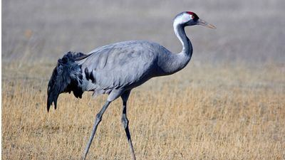

(Gruidae)
Los gruidos (Gruidae) son una familia de aves gruiformes conocidas vulgarmente como grullas. Son aves de lugares abiertos. Se desplazan dando zancadas con sus largas patas y recogen semillas e insectos con sus largos picos. Viven en bandadas y muchas de ellas recorren largas distancias para criar. Se emparejan de por vida y tienen una espectacular exhibición de cortejo. Los machos y las hembras se pavonean, se inclinan y saltan bastante alto. Las grullas tienen una tráquea muy larga y emiten agudos sonidos como de trompeta, que pueden escucharse a dos kilómetros de distancia.
1.La mayoría de las grullas tienen un plumaje gris, en diferentes matices, que crea un espectáculo visual. Aunque también hay unas que tienen una franja blanca en el cuello; así como una mancha roja en la cabeza. Hacia la cola se ubican sus plumas terciarias del ala, lo que explica por qué su plumaje es mucho más abundante en esa parte del cuerpo. 2.Las grullas poseen un aparato respiratorio amplio, lo que les permite pasar aire hasta los huesos. Estos espacios de aire pueden alcanzar unos 1.7 metros de longitud. 3.Cuando extienden sus alas miden más de dos metros de longitud, pero cuando las mantienen cerradas miden un poco más de un metro. 4.Es veloz tanto para caminar como para volar. Lo hace con su cuello erguido hacia arriba y las patas estiradas. 5.La principal característica de la grulla es la extensión de sus patas, cuello y rojo pico.